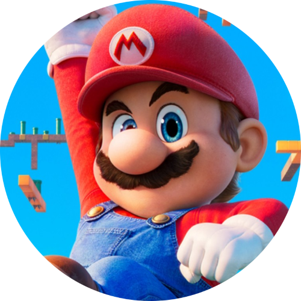

Mario

Mario conhecido como o homem dos pulos é o principal protagonista da série Mario e o mascote da Nintendo. Ele foi criado por Shigeru Miyamoto da Nintendo, e já apareceu em mais de 200 jogos. Originalmente, ele só aparecia em jogos de plataforma. No entanto, ele agora também tem papéis em jogos esportivos, jogos de corrida, jogos de luta entre outros. Ele é considerado por muitos como o personagem mais famoso na história dos videogames, e é conhecido por muitos como "A Face dos Video Games", tendo seis jogos fora do top 10 na lista dos videogames mais vendidos de todos os tempos.